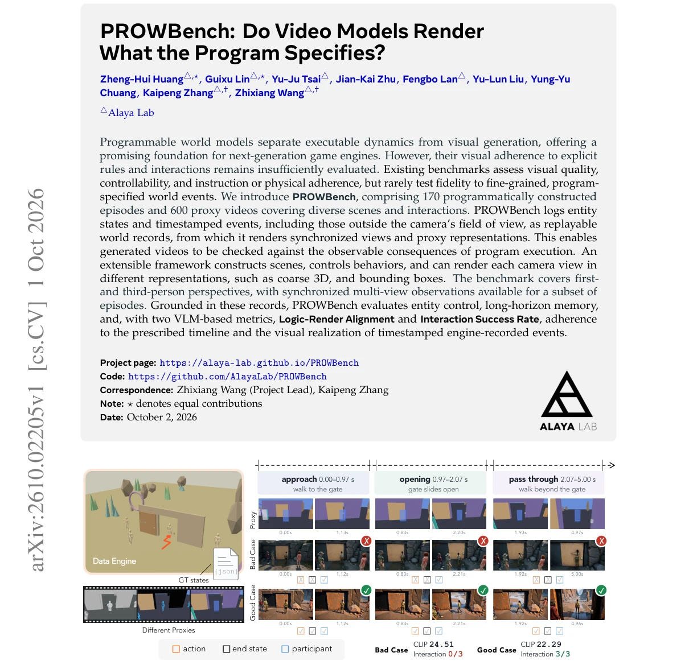
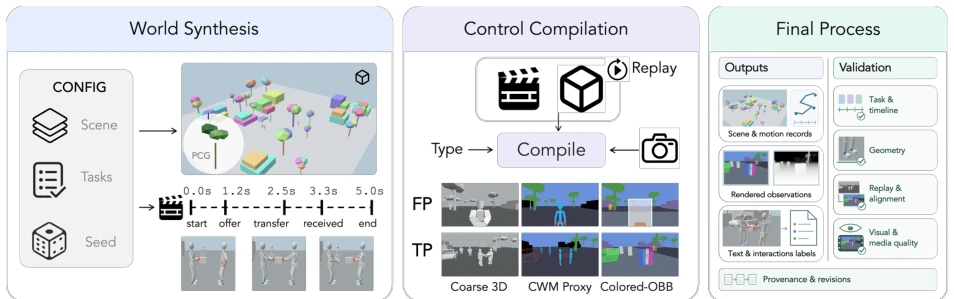
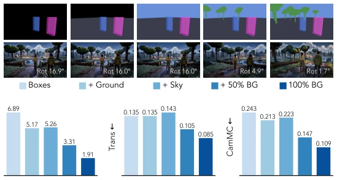
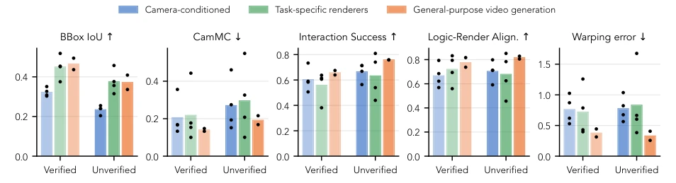
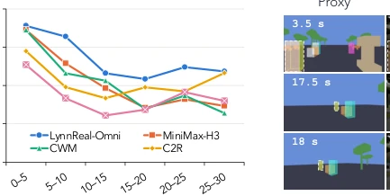
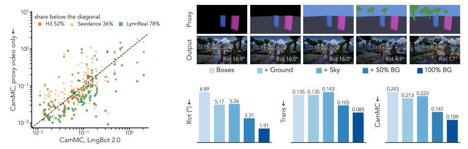
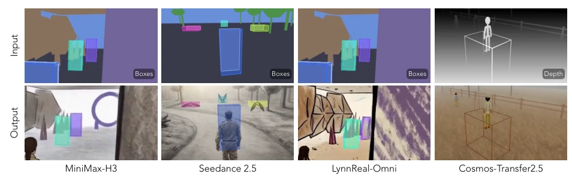
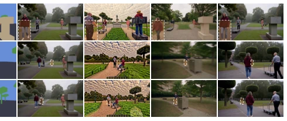

This paper holds up a 'mirror of truth' for video generation models. The core of PROWBench lies not in judging whether the visuals are aesthetically pleasing, but in using 'program execution logs' to verify if the video behaves obediently. This approach is rigorous, directly bursting the bubble of 'looking reasonable', since many videos generated by models, while plausible, may violate rules. However, although the benchmark is solid, the experimental results also expose common issues of large models: long video generation still tends to collapse, it is difficult to recover state after entities disappear, and proxy geometric features easily leak into rendering results, causing the model to 'take shortcuts' by copying bounding boxes rather than truly understanding the scene. Overall, this is a necessary benchmark test, filling the gap in program fidelity evaluation, but there is still a distance from a true controllable world model, especially the performance in multi-view consistency remains concerning.
研究动机Motivation
随着 Programmable World Model [18] 和 Code World Model [9] 的发展，世界状态演化与视觉生成被分离，但这带来了新的评估难题：程序执行了，视频真的渲染对了吗？现有基准如 VBench [17] 或 WorldSimBench [40] 多关注视频质量或物理合理性，缺乏对细粒度程序指定事件的保真度测试。没有可重放的实体状态记录和带时间戳的事件日志，生成的视频只能被评判为‘合理’，而无法验证是否忠实执行了规则。PROWBench 旨在填补这一空白，确保视频模型不仅会‘画’，还能‘守规矩’，通过同步的多视角和代理表示隔离表示影响，专注于渲染保真度。
With the development of Programmable World Model [18] and Code World Model [9], world state evolution and visual generation have been separated, but this brings new evaluation challenges: the program executed, was the video rendered correctly? Existing benchmarks such as VBench [17] or WorldSimBench [40] mostly focus on video quality or physical plausibility, lacking fidelity tests for fine-grained program-specified events. Without replayable entity state records and timestamped event logs, generated videos can only be judged as 'reasonable', and cannot verify whether rules were faithfully executed. PROWBench aims to fill this gap, ensuring video models not only know how to 'draw', but also 'follow rules', by isolating representation influence through synchronized multi-view and proxy representations, focusing on rendering fidelity.

Figure 1 Overview of our extensible framework and benchmark. Our extensible framework pairs visual proxies with ground-truth world records, enabling reliable evaluation of how faithfully generated videos realize prescribed states, rules, and interactions. This assessment would otherwise be difficult. Here, we compare the CLIP score with our proposed interaction metric. CLIP assigns a higher score to the clearly inferior case, whereas one of our metric correctly reflects whether the prescribed interaction is faithfully executed.
方法Method
整体流程分为三部分。首先是 World Synthesis，通过配置生成动态世界，记录实体状态、层级、动作相位和交互事件，形成可重放的世界记录，支持外部代理查询和状态检查。其次是 Control Compilation，将记录编译为同步的视觉条件输入，提供三种代理表示：Coarse 3D（保留形状）、Semantic Proxy（简化实体）和 Colored-OBB（空间包络），支持多视角同步，且不同视角观察同一状态。最后是 Final Process，导出场景记录、渲染观察和文本标签，并进行验证（如几何检查、重放对齐）。评估指标方面，除了传统的 IoU 和 CLIP，还提出了 Logic-Render Alignment (LRA) 和 Interaction Success Rate (ISR)，前者检查时间线内的动作是否可视化，后者验证记录事件是否被正确执行。框架支持扩展场景布局和动作，确保不同视角和表示下的数据对齐，允许研究者在不重跑行为控制器的情况下生成新视角，且通过哈希检查确保数据完整性。
The overall process is divided into three parts. First is World Synthesis, generating a dynamic world through configuration, recording entity states, hierarchy, action phases, and interaction events, forming a replayable world record, supporting external proxy queries and state checks. Second is Control Compilation, compiling records into synchronized visual condition inputs, providing three proxy representations: Coarse 3D (retaining shape), Semantic Proxy (simplified entities), and Colored-OBB (spatial envelope), supporting multi-view synchronization, where different views observe the same state. Finally is Final Process, exporting scene records, rendered observations, and text labels, and performing verification (such as geometric checks, replay alignment). Regarding evaluation metrics, besides traditional IoU and CLIP, Logic-Render Alignment (LRA) and Interaction Success Rate (ISR) are proposed; the former checks if actions within the timeline are visualized, and the latter verifies if recorded events are executed correctly. The framework supports extending scene layouts and actions, ensuring data alignment under different views and representations, allowing researchers to generate new views without re-running behavior controllers, and ensuring data integrity through hash checks.

Figure 2 Overview of the world generation pipeline. World synthesis generates replayable trajectories, control compilation produces synchronized conditioning inputs across viewpoints and representations, and the final process validates and exports videos with structured annotations.

Figure 5 Proxy composition and camera control. LynnReal-Omni on 20 scene-camera pairs, from entity boxes only to adding ground, sky and 50% of the background objects. Top: scene 043 at 4.25 s; the overlay gives the mean rotation error of that video. Bottom: means over the 20 pairs (lower is better). The 100% BG reference uses the original prompts and first-frame setting and is not a controlled step.
11 models were evaluated, divided into three categories: Camera-conditioned WM, Proxy-to-RGB, and Video Foundation Models. The dataset contains 170 episodes and 600 proxy videos. The main track tests 5-second clips, while the challenge track tests 30-second long videos and multi-view consistency. Results show that Proxy-based models significantly outperform models receiving only camera trajectories in entity trajectory following (such as EchoWM [60]). General models like MiniMax-H3 [39] perform well without fine-tuning, and even surpass dedicated renderers on some metrics. However, in long horizon (30 seconds) and multi-view generation, all models performed unsatisfactorily, and it is difficult to recover state after entities disappear (Reappearance IoU low). Additionally, Figure 6 shows that Proxy bounding boxes may leak into the output, affecting realism. Regarding multi-view consistency, methods distinguishing participants perform better, while models like C2R exhibit poor consistency.

Figure 3 Method classes at a glance. Main-track results per method class in Verified-FF (light) and Unverified-FF (dark). Bars show class means, dots the individual methods. Camera-conditioned: EchoWM, SANA-WM, LingBot 2.0, AlayaWorld v1.1; task-specific renderers: Cosmos-Transfer2.5, C2R, CWM, LynnReal-Omni; general-purpose video generation: MiniMax-H3, Seedance 2.5.

Figure 7 BBox IoU over the 30-s record- ings. Averaged in 5-s windows over the ten recordings and all entities with a ref- erence box: every method is best in the first five seconds and loses the prescribed layout as the sequence continues (the visi- ble entities differ between windows, so the curves show a trend).
其他图片Other Figures

Figure 4 Proxy only vs. camera input. Per- sample CamMC in Unverified-FF of three models without camera trajectory input against LingBot 2.0; points below the diag- onal favor the proxy-only model.

Figure 6 Proxy leakage. The top row shows proxy inputs, and the bottom row shows corresponding generated frames. In these representative failure cases, colored bounding boxes or wireframe outlines from the proxies remain visible in the outputs, revealing unintended leakage of control representations into the rendered appearance.

Figure 8 A returning pedestrian. Park scene, first-person camera, the recording with the largest drop: the dashed box is the engine reference of a pedestrian who leaves the view at 3.9 s and returns at 17.25 s. All methods localize it before it leaves (IoU about 0.6); after the return, the IoU is 0.34 (CWM), 0.30 (LynnReal-Omni), 0.17 (Seedance 2.5) and 0.01 (MiniMax-H3).